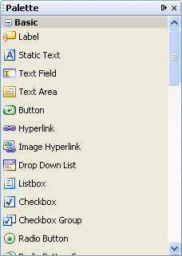

Open the Palette by choosing Window > Palette from the main menu. If you are using the Visual Designer, by default the Palette opens with all categories expanded. The Basic components, shown below, are visible if you are opening the Palette for the first time. Each category of the Palette contains a set of JavaServer Faces components.
